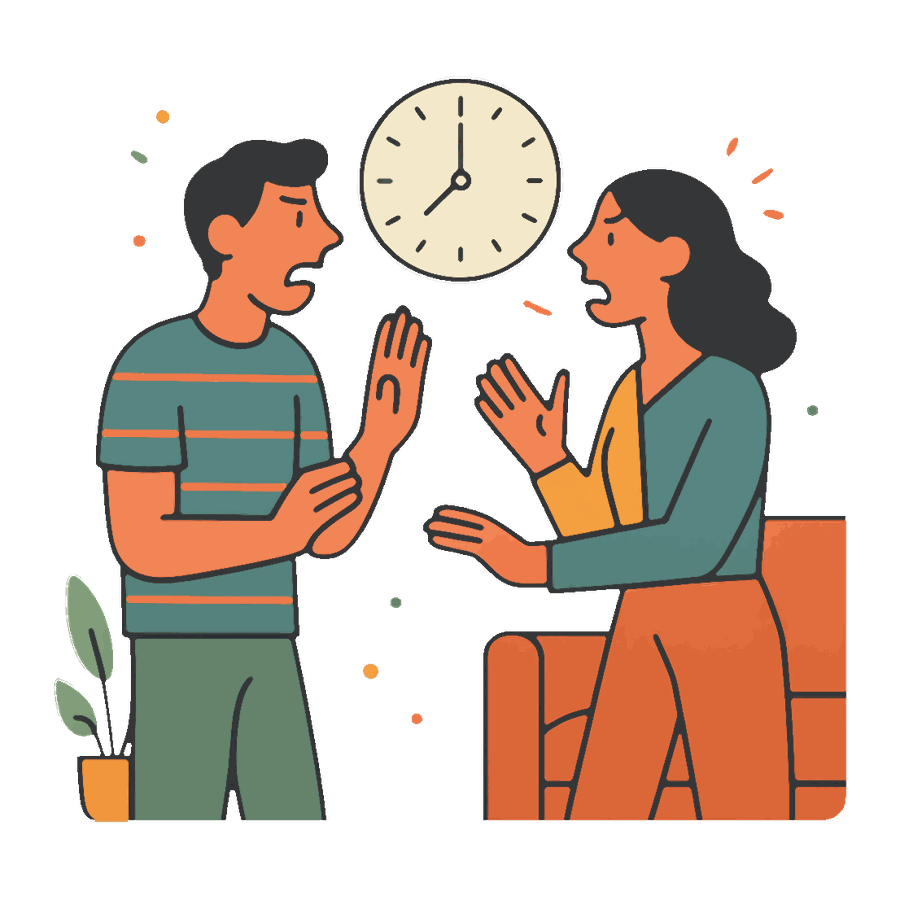

Как перестать кричать друг на друга: что делать в момент срыва

- Крик это не характер, а состояние тела: пульс за сотню, и человек уже не слышит, а защищается.
- Работает пауза на двадцать минут, объявленная вслух, и обязательное возвращение к разговору.
- Главное решается до ссоры: стоп-слово, красные линии и мягкая первая фраза.
Начинается с ерунды, а через минуту вы оба на повышенных, и уже неважно, кто про носки, а кто про маму. Потом тишина, стыд и «я не хотела так». Вопрос «как перестать кричать друг на друга» задают не скандалисты, а обычные уставшие люди, которым от собственного крика противно самим.
Хорошая новость: крик это не характер. Это состояние тела, и у него есть понятная механика.
Почему трудно перестать кричать друг на друга
В момент ссоры пульс уходит за сотню, дыхание сбивается, и мозг переключается в режим «на меня нападают». В нём человек не слышит аргументов, не помнит хорошего и не может быть бережным: он защищается. Исследователи пар называют это захлёстыванием и говорят прямо: пока тело в таком состоянии, продолжать разговор бессмысленно, полезного в нём уже не будет.
Поэтому «просто не кричи» не работает. Работает то, что возвращает тело в норму, и то, о чём договорились до ссоры, а не в её разгаре.
Что делать в момент срыва
Заметить тело раньше слов
У крика есть предвестники: сжатые челюсти, горячие уши, частое дыхание, желание перебить. Если поймать себя на них, есть пара секунд, чтобы выйти. Если не поймать, дальше говорит не человек, а адреналин.
Пауза на двадцать минут, но с возвращением
Двадцать минут это минимум, за который тело успокаивается. Уходить нужно словами: «Я закипаю и не хочу орать. Мне надо двадцать минут, потом вернусь». И вернуться обязательно, иначе пауза читается как побег и злит сильнее крика.
Понижать громкость, а не выигрывать спор
Есть простой приём: говорить тише собеседника. Не шёпотом и не сквозь зубы, просто спокойнее. Кричать в тишину физически трудно, и через минуту громкость падает у обоих.
Одна тема, никакой истории
Крик почти всегда разгоняется там, где к сегодняшнему поводу пристёгивают прошлый год. Держитесь одного эпизода: сегодня, вот это, вот моё чувство.
«Стоп. Я тебя уже не слышу, я только защищаюсь. Мне нужно двадцать минут, чтобы остыть, и я вернусь к этому разговору. Я не убегаю».
О чём договориться заранее
- Стоп-слово. Любое условленное слово, которое означает «пауза», а не «я прав». Работает, только если его уважают оба.
- Красные линии. Что не произносится никогда: про внешность, про родителей, про развод в качестве угрозы. Такие слова живут дольше самой ссоры.
- Не выяснять отношения голодными, пьяными и после полуночи. Правило скучное, а срывов от него становится заметно меньше.
- Мягкий старт. Первая фраза решает почти всё: «мне обидно из-за вчерашнего» вместо «ты вообще думаешь, что делаешь».
Понять, из-за чего вы срываетесь
Расскажите Медиатору, как начинается ваша обычная ссора. Он поможет увидеть момент, где разговор сворачивает в крик, и подскажет фразу, которой можно остановиться. Если партнёр тоже готов, каждый напишет боту свою версию наедине, второй её не увидит, и у каждого будет свой разбор. Первый разбор в месяц бесплатный.
Разобрать нашу ссоруЧто делать после срыва
Если накричали, извинитесь за форму, не дожидаясь, пока партнёр признает свою часть: «Прости, я орала. Тема для меня важная, но так разговаривать нельзя». Это не капитуляция и не отказ от своей позиции, это ремонт. Про то, какие извинения работают, а какие только злят, есть отдельный разбор. И про детей: если крик случился при них, потом скажите, что взрослые поссорились и помирились и что дело не в них. Дети боятся не столько громкости, сколько тишины после неё.
Отдельно про случай, когда крик перестал быть срывом. Если громкостью добиваются своего, если появились оскорбления, унижение при людях или страх высказаться дома, техники разговора здесь не помогут. С этим идут к специалисту, а при угрозе безопасности звонят 112.
Частые вопросы
Как перестать кричать на любимого человека?
Ловить тело раньше слов и выходить на паузу минут на двадцать, объявив её вслух. А правила обсуждать в спокойное время: в разгаре ссоры никакие техники не вспоминаются.
Мы кричим, а потом миримся. Это нормально?
Ссоры бывают у всех, вопрос в цене. Если вы быстро чинитесь и без оскорблений, это переносимо. Если каждый раз летят слова, которые потом стыдно вспоминать, привычку стоит менять.
Как не сорваться на крик при детях?
Договоритесь, что разговор на повышенных откладывается, пока ребёнок рядом. Если всё же сорвались, потом скажите ему, что взрослые поссорились и помирились и что дело не в нём.
Партнёр кричит, а я нет. Что делать мне?
Не подстраиваться под громкость и не оправдываться в потоке. Спокойно назвать границу: «Я готова это обсуждать, но не на крике. Вернёмся, когда сможем говорить нормально», и правда выйти из комнаты.